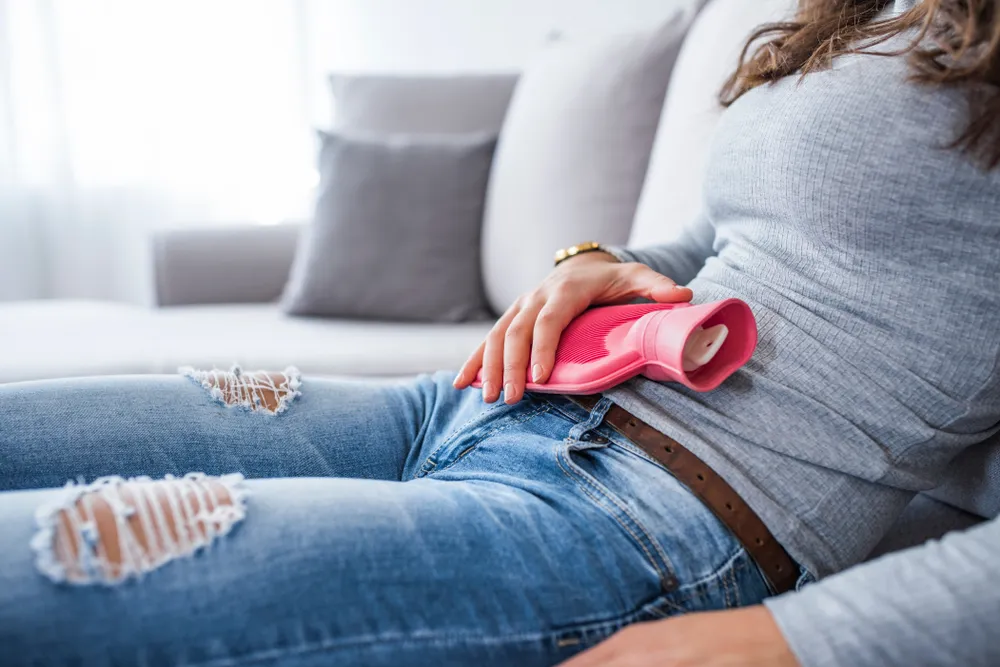

Effective Home Remedies to Soothe Menstrual Cramps

Do you experience cramps during menstruation? You should know you’re not alone. Many women report having abdominal pain during their period. The severity of the pain can be different for every woman, ranging from mild to severe. For some women, it’s a minor annoyance, while it can be debilitating for others and can even interfere with their daily activities. The good news is, if you suffer from menstrual cramps, there are ways to ease the pain and help you get relief.
Common Symptoms of Menstrual Cramps
Symptoms can vary for each individual, and the severity of those symptoms can vary too. In general, the common symptoms of menstrual cramps include a throbbing or cramping pain located in the lower abdomen/pelvic area. At times, it can be intense.
Other common symptoms include a dull, continuous ache and pain that can radiate to the lower back or thighs. The Mayo Clinic explains pain typically starts 1 to 3-days before the start of your period, “peaks 24 hours after the onset of your period and subsides in 2 to 3 days.”
Why Menstrual Cramps Happen
So, why do menstrual cramps happen in the first place? Healthline says, “during your period, the muscles of your womb contract and relax to help shed built-up lining.” Your muscles contracting is what causes the painful cramps.
Unfortunately, it’s unclear why some individuals experience painful symptoms while others don’t. That said there may be some factors that increase the pain. The source says, your age (under 20-years old), having a heavy menstrual flow, and having your first child may make the pain more intense. Endometriosis and growths in your uterus may also be contributing factors.
Apply Heat
One of the first effective remedies you should try is applying heat to your lower abdomen and/or your lower back. One study found that heat therapy was just as effective as taking pain relievers. Another possible positive aspect of heat therapy is that there may be fewer side effects compared to taking over-the-counter medication.
A hot water bottle or a heating pad are great options you can use. If you don’t have these at home, you can try taking a warm bath or using a hot towel.
Avoid Certain Foods
Some foods may increase the severity of your cramps such as fatty foods, alcohol, caffeine, salty foods, and carbonated beverages. These foods usually cause water retention and bloating .
By reducing (or completely cutting out) these foods, you may be able to help relieve your cramps. If you have a craving for any of these foods, reach for mint or ginger tea, or fruit instead of sugar.
Consider Dietary Magnesium
Another effective remedy that you might want to consider is dietary magnesium. A naturopathic doctor and faculty member at Bastyr University in Sandiego, Dr. DeJarra Sims tells Everyday Health that dietary magnesium seems to help ease painful menstrual cramps.
The good news is there are many accessible foods that are rich in magnesium . They include almonds, spinach, yogurt, peanut butter, black beans, and more. Dr. DeJarra Sims also notes if you want to try taking a magnesium supplement instead, it’s best to speak with your doctor to find out the appropriate dosage for you.
Exercise
While exercise may be the last thing on your mind when battling painful period cramps, it might actually do some good! However, you don’t want to engage in strenuous exercise but instead, enjoy a walk or gentle stretching.
Exercise releases endorphins which are “neurotransmitters that are released by the brain to alleviate pain and promote pleasure,” says Healthline . The source also says endorphins can improve your mood and reduce inflammation both of which will help you feel better.
The Benefits of Yoga
While walking and gentle stretching can do you good, one form of exercise stands out from the rest when it comes to soothing painful menstrual cramps. That form of exercise is yoga !
One study examined a group of undergraduate students where 20 women engaged in an hour-long yoga session once a week for 3-months and the other group of 20 did not. The findings showed that the women who did yoga “had less menstrual cramping and period distress than 20 women who didn’t,” says Everyday Health.
Drink Herbal Tea
The next time you experience painful menstrual cramps make yourself a cup of warm herbal tea. Drinking a warm drink has its own benefits but some herbs can be beneficial too.
Medical News Today says, “Some manufacturers market specific teas, such as chamomile, dandelion, red raspberry, and fennel teas, as providing relief from menstrual cramps.” Although keep in mind there is little scientific evidence to prove this and to check with your doctor or pharmacist to ensure the herbs do not interact with your current medications. Nonetheless, it might still be worth a shot!
Massage With Essential Oils
When your period arrives, you might want to book a massage, or instead, give yourself a massage over the abdomen. This can help relax the pelvic muscles and in turn, help soothe the painful cramps. Giving yourself a massage with essential oils may provide even more benefits.
One study compared two groups of students. One group used only almond oil while the other used essential oils (a blend consisting of lavender, rose, clove, cinnamon, and an almond oil base). The findings showed the women who used the essential oil blend had significantly more results compared to the group who only used the almond oil.
Pain Relievers
In some cases, pain relievers may be necessary. Especially if the other remedies aren’t working. You can try taking an over-the-counter (OTC) pain reliever to help soothe your cramps.
The reason some medications can help is that they relieve inflammation and pain. It’s important to follow the directions on the bottle and always check in with your doctor before trying a new OTC medication.
Consider Acupuncture
While acupuncture isn’t exactly a remedy you can try by yourself at home, it may provide some much-needed relief. So, we think it’s worth noting.
A licensed acupuncturist, Jeanie Bianchi tells Everyday Health, this “ancient Asian healing method is thought to relax the nervous system, allow more blood to flow to internal organs, and quell inflammation.” If you want to give it a try do your research to find a qualified and reputable acupuncturist in your area.
When to See a Doctor
If home remedies fail to ease your menstrual cramps, it might be time to see a doctor. Your doctor may be able to suggest other remedies to try, or in some cases, they may prescribe medication to help you manage your symptoms.
If you experience other symptoms such as cramps that get worse as you grow older, severe pain, cramps that interfere with your daily life, or heavy bleeding then you should book an appointment with your doctor. In some cases, severe cramps can be a sign of another underlying issue which we’ll get into next.
When Menstrual Cramps Can Be a Sign of Something Else
As mentioned, in some cases, your painful cramps may be a sign of another underlying health issue . For starters, painful cramps may be a sign of endometriosi,s which is a disorder that occurs when tissue grows outside your uterus.
It could also be uterine fibroids , which are noncancerous growths that develop on the uterine walls. Fibroids can range from very small, to big masses. Finally, it could also be a sign of adenomyosis , which occurs when tissue that is supposed to line the uterus starts to grow inside the organ’s muscle wall.
All of these conditions will cause cramping similar to menstrual cramps, however, they are typically more severe and usually last longer than normal menstrual cramps. If this occurs, book an appointment with your doctor to rule out other health conditions.
Source: https://activebeat.com/your-health/women/effective-home-remedies-to-soothe-menstrual-cramps/